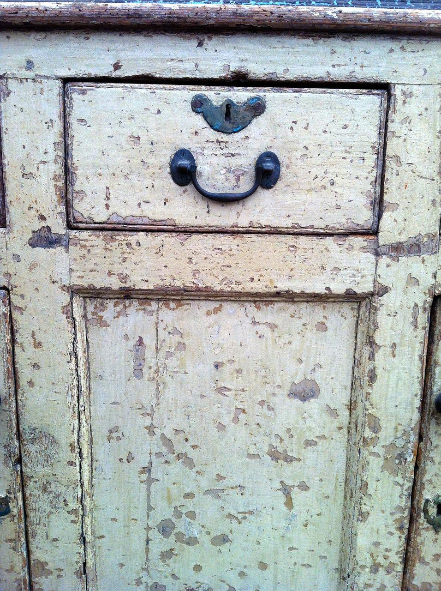
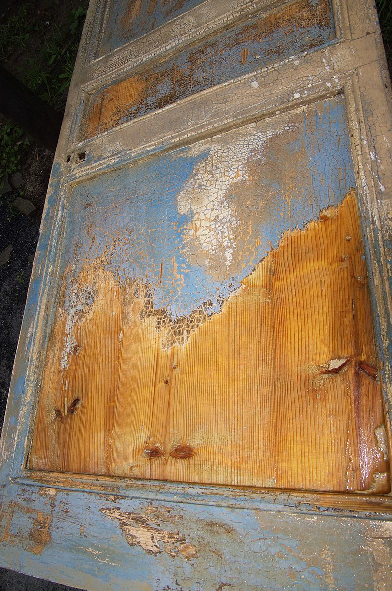
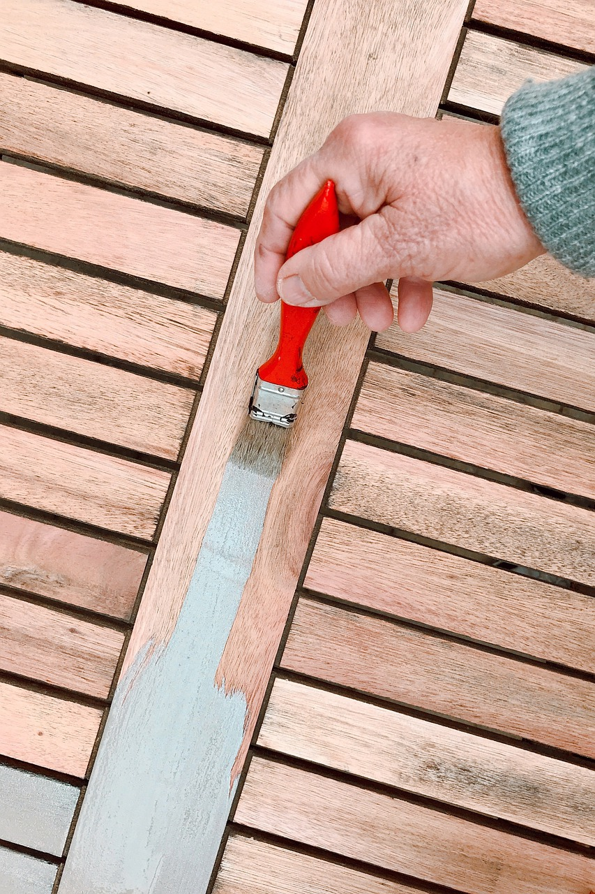

Goals
- Determine the supplies and skills needed to refinish wooden furniture.
- Learn how to remove hardware and existing finishes from wooden furniture.
- Learn how to make small repairs and repaint or stain wooden furniture.
Supplies and Skills

In today’s economy, buying all new furniture is not an option for many people. But fear not! With only a few inexpensive supplies and some elbow grease, you can give your ugly furniture a facelift! Before you begin, make sure your furniture is made of real wood (K. Beuerlein, n.d.). Small, simply designed pieces that have never been painted are the easiest to refinish. Gather your supplies, including a screwdriver, sandpaper, Barkeeper’s Friend (or vinegar), a paintbrush, primer and paint (or stain), and a clear finish. You may also need wood putty, a scraper, and chemical paint stripper. Of course, don’t forget to have safety glasses, gloves, and a face mask. No specific skills are required, as long as you can sand and paint.
Removing the Old Finish

Remove the old hardware with a screwdriver and note where each piece comes from so it can be reattached in the same location. Clean the hardware by soaking it in either Bar Keeper’s Friend or a mixture of vinegar and water (L. Thomann, 2021). If necessary, test the old paint for lead. Remove old paint or varnish using sandpaper and/or a chemical stripper. Sanding is effective but tedious, and chemical strippers are fast but can be messy and potentially hazardous (T. O’Brien, 2020). After the old finish has been removed, smooth the entire surface with sandpaper. Always sand in the same direction as the wood grain. Finally, thoroughly clean up all the dust.
Applying the New Finish

In a well-ventilated area, apply a coat of primer and let it fully dry. If necessary, a second coat of primer, lightly sanding and removing dust between coats. When the final coat of primer is dry, gently sand and remove the dust. Apply 2-3 coats of paint, allowing it to dry between each coat. Lightly sand and remove the dust between coats as needed. When painting, apply a thin, even layer using smooth brushstrokes. When the final coat of paint has dried fully, apply 1-2 layers of a clear protective coating. It is important to use an oil-based clear coat (such as polyurethane) for oil-based paints, and a water-based clear coat for water-based paints (S. Pattillo, 2021).